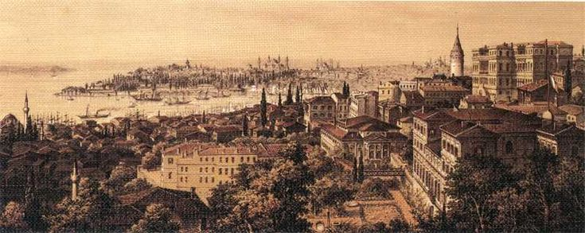

Lucky Escapes
"Some men are born under lucky stars. Others simply learn to duck at the right moment."
— Attributed to Sir Stanley Rawlinson, in conversation with Lord Clarendon, 1858
Baklava Diplomacy (Constantinople, 1849–1853)

Stanley, 1857
Stanley's second overseas posting with the Foreign Service was to the Ottoman capital of Constantinople in August 1849, where he arrived as Counsellor — a role that would prove, at least at first, more serene than many that followed. The Ottoman Empire under the reformist Sultan Abdülmecid I was in the midst of a rare moment of relative stability. Abdülmecid, then in the twenty-fifth year of his reign, had already set in motion the Tanzimat reforms: a sweeping modernisation effort granting new civic, educational, and fiscal rights across his sprawling, creaking dominions.
These reforms were as pragmatic as they were idealistic — a desperate bid to hold together an empire fraying at the edges under the pressures of nationalism and foreign intrigue. Abdülmecid, ever the political tactician, understood that survival required allies. He cultivated Britain and France as counterweights to Russian designs, a courtship that found its perfect English match in the clear-headed, occasionally sardonic Stanley Rawlinson.
His first task, however, was an awkward one. In the wake of the Irish famine, the Sultan had declared his intention to donate £10,000 to the stricken people of Ireland — an act of generosity that, to British eyes, risked embarrassment, given that Queen Victoria had contributed only a fifth of that sum. The delicate mission of "diplomatic dissuasion" fell to Stanley.
In a dispatch to London, he outlined his tactful solution, pitched to the Anglophile Grand Vizier Mustafa Reşid Pasha:
"We suggested to His Excellency that in order to achieve the twin objectives of honouring the Sultan's desire to assist the Irish, and to not rankle Her Majesty's sensitivities, he might consider reducing the proposed financial contribution from ten thousand pounds to just one thousand, but to make up the difference in material contributions such as grain, dried falafals, absurdly sweet baklava and other more staple foodstuffs."
The compromise was accepted — the Sultan's pride soothed, and Britain's embarrassment discreetly averted. It was an early example of Stanley's particular brand of diplomacy: half pragmatism, half mischief, all charm.

Constantinople, c. 1850
A Princess and a Black Eye

Princess Viktoria, 1851
Constantinople's cosmopolitan whirl soon introduced Stanley to the woman who would become both his great love and, later, his great regret: Princess Viktoria of Bulgaria. Though the Bulgarian monarchy had long been subsumed by the Ottomans, a few aristocratic titles survived as hollow echoes of a fallen dynasty. Viktoria, a descendent of the last Emperor of the Second Bulgarian Empire (Constantine II), by a curious twist of medieval inheritance had become Princess of Vidin at the age of ten, following her brother Boris's untimely death.
Stanley first encountered her at a diplomatic reception hosted by the Greek ambassador in early 1850 (he aged 35 and she ten years his junior). As legend — and a leaked Greek dispatch — has it, the evening took a dramatic turn when the newly arrived British Minister found himself in an altercation with the Russian Military Attaché, who had become overly familiar with the young princess.
The dispatch records, with typical Greek candour:
"[Translated from original Greek]…upon investigating the disturbance, we discovered the newly arrived British Minister in an altercation with the Russian Military Attaché. The Russian, clearly three ouzos the wrong side of a diplomatic incident, had taken quite the liking to Princess Viktoria (a personal guest of the Ambassador), while the Englishman seemed to have taken umbrage both at the Russian's boorish manner towards the Princess, and indeed his very existence…"
The affair ended with the Russian nursing a bloodied nose, Stanley sporting a black eye, and, as one wag put it, "the Princess gaining a suitor."
Romantics would later claim it was love at first sight. Stanley's friend General William Charles Forrest, however, recorded a rather less poetic explanation:
"Stanley always maintained that it all boiled down to this: she had a cracking pair of pins."
After eighteen months of courtship, Stanley and Viktoria were married in the spring of 1851 in her home town of Varshets, a lavish ceremony attended by Ottoman dignitaries and curious British officers.
The Sick Man and the Long Telegram

Order of the Medjidie (Third Class)
The remainder of Stanley's tenure in Constantinople is shrouded in mystery. Some records remain classified; others are mysteriously absent altogether. What is known is that his work focused on two enduring Foreign Office obsessions: supporting the Tanzimat reforms and countering Russian expansionism.
Stanley's diligence did not go unnoticed. In 1852, Sultan Abdülmecid honoured him with the Order of the Medjidie (Third Class) — an accolade rarely bestowed upon foreigners, awarded "for acts of great value to the Empire." Thus, Stanley earned his first post-nominal: OM.
Yet his greatest notoriety came in 1853, just before his departure. Acting as Chargé d'Affaires during the Ambassador's absence, he penned what became known as "the overly long telegram." The document — thirty-seven pages of impassioned analysis — detailed the empire's declining fortunes, the rising nationalism among its minorities, and its precarious finances. It was also the first recorded use of the now-famous epithet "the sick man of Europe."
At a cost of £1,246, three shillings, and sixpence, it remains one of the most expensive messages in Foreign Office history. The response from London was terse: a complaint about "florid language and disregard for government protocol and funds."
Stanley's reply, sent with the economy and wit his first message had lacked, consisted of just one biblical citation: John, 11:35 — "Jesus wept."
Stanley returned to London with Viktoria in early Spring of 1853, but the couple had only a couple of months to settle down in a rented townhouse in Pimlico, before Stanley was once again called upon to deploy overseas. There was unfortunately no question of his wife accompanying him.
Among the Russians: The Crimean War (1853–1856)

Siege of Sevastopol
By September 1853, Stanley was back in harness, appointed Her Majesty's Political Agent in Sevastopol — the heart of the Russian Black Sea Fleet. The post, envisioned by Foreign Secretary Lord Clarendon, was meant to be a discreet "eyes and ears" operation. Within a month, the Ottomans had declared war on Russia, and Stanley found himself in the middle of what would soon be the Crimean War.
Working furiously to establish networks with senior Russian military figures, officials and even Royalty, Stanley proved, as General Nikolay Muravyov-Karsky recalled:
"The admirable skill of Stanley Rawlinson was his affable and disarming manner of engaging his audience. Indeed, so often in our discourses, one could be forgiven for forgetting that he truly represented perfidious Albion at all. He also served a ruddy good Beaujolais."

Telegram from Constantinople, 1849
In March 1854, as Britain and France joined the war, Stanley sent a prescient telegram proposing two possible strategies — economic strangulation of the Russian elites, or a full-scale invasion of Crimea. The Allies chose the latter, and by September their armies were marching toward Sevastopol.

Dispatch from Sevastopol, 1855
Stanley remained inside the city throughout the eleven-month siege, slipping intelligence to the British lines through his daring aide, Captain Charles Ratman, later awarded the Victoria Cross. How the pair avoided capture remains uncertain. Some, like Muravyov, suggested Stanley's rapport with the Russian elite shielded him; others, more cynically, believed he was simply too clever to be caught.
When the siege finally broke, Major General Henry Barnard recorded the scene of Stanley's reappearance:
"That evening there walked into camp one of the most dishevelled specimens I have encountered in all my days. Dressed in the garb of a Russian dock worker, he would have been shot on sight, had he not been accompanied by Captain Ratman… Despite his articles, he was bearing himself as only an Englishman can do, and introduced himself as Her Majesty's Political Agent Rawlinson… Upon my introducing myself, Rawlinson responded with a simple phrase: 'What took you buggers so long!'"

Siege of Sevastopol, Franz Roubald
Titles, Tears, and Mangoes (1856)

Order of the Bath notification, 1856

Order of the Bath notification, 1856
Returning to London in 1856, Stanley discovered two startling developments. The first: he was to be knighted as Knight Commander of the Order of the Bath (KCB) "for exceptional courage in the face of overwhelming challenges." The second: his wife, Viktoria, had left him for an unnamed aristocrat whom Stanley, with typical acid wit, referred to only as "Lord Small-Balls."
The divorce proceeded swiftly and amicably, but Stanley's reprieve was brief. That November, his Foreign Service career collapsed under the weight of the mysterious "Naked Mango Incident" — an event involving, by all whispered accounts, the Egyptian Ambassador, the wives of the Norwegian, French, and Ottoman envoys, and at least three mangoes. Maybe the failure of his marriage effected his judgement or perhaps his jubilation at his knighthood led him to an excess of boisterousness. The precise details remain lost to history, but the consequences were clear: Stanley and three senior colleagues resigned in disgrace.

Clarendon's letter of acceptance, 1856
Given his reputation, Lord Clarendon's acceptance of the resignation "with regret and incredulity" suggests an indiscretion of legendary magnitude. Historians have since failed to unearth the truth, and the matter remains, tantalisingly, one of Victorian diplomacy's more exotic enigmas. Several eminent historians have sought to ascertain the facts behind the incident over the years, but to no avail. Given the time elapsed, it is likely that the truth will never now be unearthed, and went to the grave with those involved at the time.
Into the Fires of India (1857)

Clarendon's letter, June 1857
Yet Stanley's fall from grace was far from final. In June 1857, as India erupted into rebellion, Clarendon summoned "all our best men." Stanley answered the call, joining Lieutenant-General Sir James Outram as political adviser en route to relieve the besieged British garrisons at Cawnpore and Lucknow.

First Relief of Lucknow, September 1857
Stanley joined Outram in Calcutta, before accompanying him to relieve the now depleted, diseased and exhausted Cawnpore garrison under the command of Outram's old comrade General Sir Henry Havelock. Famously, Outram was so impressed by Havelock's previous efforts in the defence of, and attempts to relieve Lucknow, that he gave the latter command of the relief effort, and waiving his own rank, offered his services as a volunteer, leading a troop of volunteer cavalry, with Stanley at his side.
A man well-known for his sense of honour, integrity and dignity, in his celebrated journal of the time, Outram recounted a conversation with Stanley which may have contributed to his decision:
"I noted to my advisor the strategic brilliance which Havelock had already shown in the previous reliefs… Sir Stanley proposed that Havelock be given a command role in the forthcoming relief, as opposed to being sent to recuperate… I went one better, proposing to honour Havelock with overall command of the operation, reducing my own position to any which Havelock might find my service useful… Rawlinson instantly saw the benefits this would have on the morale of the men and agreed it a prudent course of action, adding that he would himself ride by my side 'into the very fires of Hell', which of course, I knew he would."

Kavanagh disguised as a Sepoy — Stanley is depicted seated (right)
During preparations, Stanley encountered his old school nemesis Harry Paget Flashman, now improbably a decorated officer. In a letter to Tom Brown, Stanley offered a typically biting character sketch:
"…HPF has lost none of his boorish sense of entitlement and bluster… I swear that his account of his heroics at Kabul and Jellalabad, his self-righteous claims of derring-do in the colonies and his self-styled persona as the 'Hector of Afghanistan' contain about as much truth to them as the purported chastity of Good Queen Bess."
Following the successful first relief, Outram, Havelock and the British reinforcements were delayed in their retreat by the need to tend the many wounded and were once again besieged in Lucknow. Over the next six weeks, the defenders were subjected to constant musket and artillery fire whilst enlarging and fortifying their positions. Stanley continued to support Outram in various ways, serving on his regular councils alongside Havelock and Brig. John Ingliss among others. In another letter, Outram credits Stanley with the initial suggestion to disguise one of their number as a sepoy in an attempt to contact and advise the upcoming second relief under Sir Colin Campbell. A role undertaken with extraordinary bravery and success by civilian Thomas Henry Kavanagh.

Second Relief of Lucknow (Thomas Jones Barker) — Stanley is depicted in the background
After Campbell's second relief in November 1857, Stanley accompanied the forces in their retreat from Lucknow, Cawnpore and on to Alambagh where the British regrouped. From there, many of the survivors were relieved and returned to England. Stanley, according to a letter sent by Outram, had been afflicted by a bout of dysentery (the same which claimed the life of Gen. Havelock) but had argued to be permitted to remain and assist with the defence. Outram refused to accept Stanley's request, stating that he had "more than done his duty to me, God and the Empire" and ordered him to return to England and recuperate.